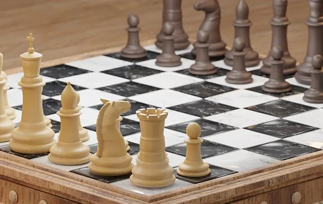

Curiosidades Sobre o Xadrez
Movendo o rei
Há algum tempo foram feitos alguns cálculos sobre a movimentação do Rei no tabuleiro, e chegou-se a uma incrível descoberta. Partindo da sua casa inicial (e1) e seguindo o caminho mais curto, ou seja, em 07 lances, pode atingir a oitava (8ª) casa (e8) de 393 modos diferentes.
Rei e torre
Um final de partida com o rei e a torre pode formar 216 posições diferentes de mate; um final de rei e dama contra rei: 364.
Xadrez na escola
O Xadrez é disciplina escolar obrigatória na Romênia e as notas em Matemática dependem em 33% do desempenho no Xadrez.
Os 10 primeiros lances
No xadrez existem precisamente 169.518.829.100.544 quatrilhões (15 zeros) de maneiras de jogar apenas os dez primeiros lances. Para os 40 lances seguintes de um jogo inteiro, o número é estimado em 25 x 10 elevado a 115 potência. O número inteiro de átomos em todo o universo é apenas uma pequena fração desse resultado.
O campeão mais jovem
O campeão nacional absoluto mais jovem de todos os tempos e de todas as modalidades esportivas é um jogador de Xadrez. Trata-se do peruano Júlio Granda Zuñinga, campeão nacional aos 6 anos de idade.
O jogo mais longo
O jogo o mais longo de xadrez de todos os tempos jogados por jogadores top do ranking teve 269 movimentos de Ivan Nikolic e Goran Arsovic em Belgrado em 1989. Durou mais de 20 horas, e resultou em um empate.
Xeque-mate!
A palavra "Xeque-mate" vêm da frase persa "Shah Mat", que significa "o rei está morto".
Super paciência
O movimento mais lento registrado foi de Francisco R. Torres Trois, levou 2 horas e 20 minutos para fazer um movimento em um jogo contra Luis M.C.P. Santos, em Vigo, Espanha em 1980. Trois tinha somente dois movimentos possíveis a considerar.
As posições do Rei
Dois reis podem ocupar no tabuleiro 3612 posições diferentes. Dois reis e duas peças quaisquer podem forma, aproximadamente, 12.000.000 de posições diferentes. Dez peças: 34.254.125.120.000.000.
O Dia Internacional do Enxadrismo
O Dia Internacional do Enxadrismo é comemorado todos os anos no dia 19 de novembro, data de nascimento de José Raúl Capablanca, considerado um dos maiores enxadristas de todos os tempos e o único hispano-americano a se sagrar campeão mundial.
O Gambito da Rainha
O gambito da Rainha (The Queen's Gambit, Netflix - 2020) é uma minissérie, baseada no livro de Water Tevis, que conta a história de Beth Harmon, uma prodígio do xadrez que enfrenta todos os desafios de ser uma mulher enxadrista nos anos 60.
O mais impressionante é a repercursão da série, que por sinal é excelente. As vendas de tabuleiros de xadrez aumentaram 80% nos Estados Unidos, na semana de estreia , as buscas por "jogos de xadrez" no Google cresceram 41% - e continuaram crescendo a ponto de atingir seu nível mais alto dos últimos sete anos, em novembro.
Mas afinal, o que é um gambito? A revista Superinteressante preparou uma reportagem que explica o movimento que da nome à minissérie.